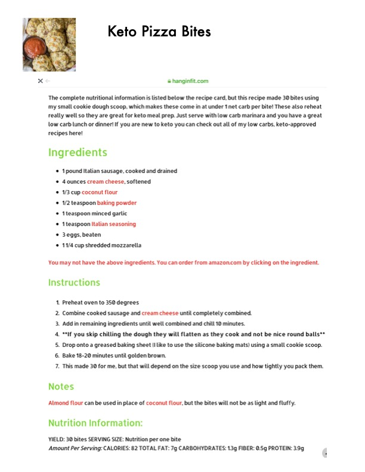

Keto Pizza Bites

Original cookbook page 28
This recipe makes 30 bites using a small cookie dough scoop, which makes these come in at under 1 net carb per bite! These also reheat really well so they are great for keto meal prep. Just serve with low carb marinara.
Prep: 10 minutes chill time • Cook: 18-20 minutes • Total: 30-35 minutes
Ingredients
- 1 pound Italian sausage, cooked and drained
- 4 ounces cream cheese, softened
- 1/3 cup coconut flour
- 1/2 teaspoon baking powder
- 1 teaspoon minced garlic
- 1 teaspoon Italian seasoning
- 3 eggs, beaten
- 1 1/4 cup shredded mozzarella
Instructions
- Preheat oven to 350°F.
- Combine cooked sausage and cream cheese until completely combined.
- Add in remaining ingredients until well combined and chill 10 minutes.
- Do not skip chilling the dough — they will flatten as they cook and not be nice round balls.
- Drop onto a greased baking sheet (silicone baking mats work well) using a small cookie scoop.
- Bake 18-20 minutes until golden brown.
- This made 30 bites, but yield depends on scoop size and how tightly you pack them.
Recipe #28 from collection